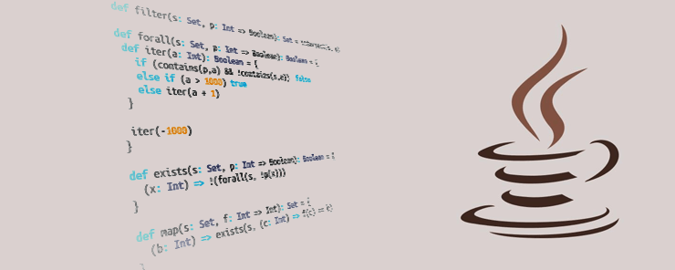

Java

Java é uma linguagem de programação orientada a objetos, criada pela Sun Microsystems em 1995 e atualmente mantida pela Oracle. Conhecida por seu lema “escreva uma vez, execute em qualquer lugar” (WORA), Java se destaca por sua portabilidade entre plataformas, graças ao Java Virtual Machine (JVM), que permite que o código Java seja executado em praticamente qualquer sistema operacional. Java é amplamente usada em aplicações empresariais, Android, jogos, APIs e sistemas de backend devido à sua estabilidade e segurança. Veja a seguir uma visão completa de Java:
Arquitetura Portátil e Plataforma-Independente
Java é projetada para ser portátil, significando que o código Java compilado em bytecode pode ser executado em qualquer sistema que tenha uma JVM instalada, independente do hardware ou sistema operacional. Isso torna Java uma linguagem ideal para sistemas distribuídos e aplicativos multiplataforma.Essa arquitetura portátil contribui para que Java seja usada em uma ampla gama de dispositivos, desde grandes servidores empresariais até dispositivos móveis.
Orientação a Objetos e Reutilização de Código
Java é uma linguagem puramente orientada a objetos, permitindo que os desenvolvedores criem sistemas estruturados e organizados usando conceitos como herança, polimorfismo e encapsulamento.
Essa abordagem facilita a criação de módulos reutilizáveis, contribuindo para uma maior eficiência no desenvolvimento e manutenção de sistemas grandes e complexos.
Biblioteca de Classes Padrão e APIs Poderosas
Java possui uma biblioteca de classes extensa, cobrindo desde funcionalidades básicas, como
manipulação de arquivos e strings, até operações avançadas, como programação concorrente,
manipulação de redes e gráficos. Isso possibilita que desenvolvedores construam aplicações robustas
sem a necessidade de bibliotecas externas.
Além disso, Java possui um ecossistema de APIs maduras e bem documentadas, que auxiliam na criação
de aplicações de alto desempenho.
Segurança e Estabilidade em Ambientes Empresariais
Java é conhecida por ser uma das linguagens mais seguras, pois possui controle de memória rigoroso,
evitando erros como ponteiros nulos e alocação incorreta. Sua arquitetura oferece controle sobre
permissões e isolamento de processos, proporcionando um ambiente seguro para execução de código.
Muitas grandes empresas escolhem Java para aplicações empresariais devido a essa estabilidade e
confiabilidade, sendo usada para desenvolver sistemas financeiros, gerenciadores de dados e
aplicações de alta complexidade.
Aplicações em Android, Back-end e Muito Mais
Java é a linguagem principal para desenvolvimento de aplicativos Android, possibilitando a criação de
aplicativos móveis altamente performáticos. Graças à interoperabilidade do Kotlin com Java, muitos
desenvolvedores utilizam ambas as linguagens em projetos Android.
No backend, Java é usada para desenvolver sistemas escaláveis com frameworks robustos como Spring e
Hibernate, amplamente adotados em sistemas de grande porte, APIs RESTful e microsserviços.
Principais Vantagens e Desvantagens
Vantagens
Desvantagens
Por Que Escolher Java?
Java é uma excelente escolha para desenvolvedores que buscam portabilidade, segurança e escalabilidade. Ela se destaca em sistemas grandes e complexos, como aplicativos Android e soluções corporativas, onde a confiabilidade e a interoperabilidade entre plataformas são cruciais. Com uma sintaxe orientada a objetos e uma biblioteca padrão rica, Java oferece as ferramentas necessárias para construir sistemas robustos e de alta performance.
Canal indicado: Curso em Vídeo
Didática simples e funcional.
PHP é uma linguagem de script amplamente utilizada para desenvolvimento web. Popular em sites dinâmicos e gerenciamento de conteúdo, ela se integra facilmente a bancos de dados e é usada em plataformas como WordPress e Magento. Com frameworks como Laravel e Symfony, PHP facilita a criação de aplicações web escaláveis e seguras.